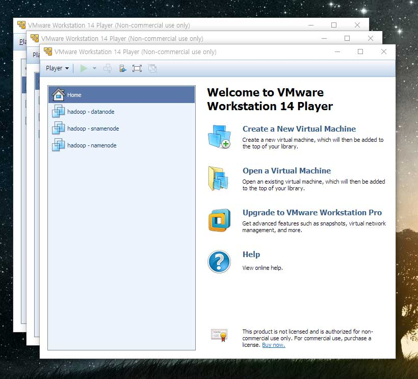
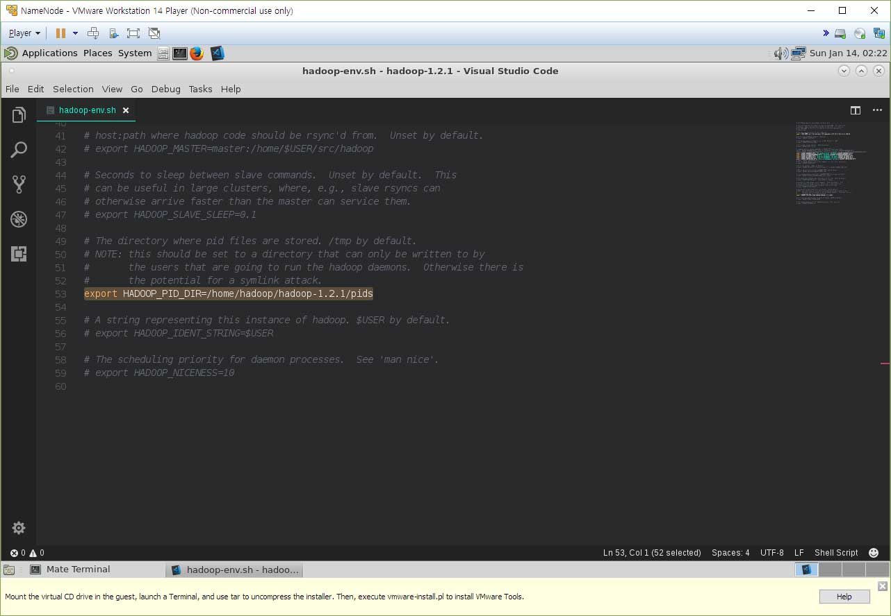
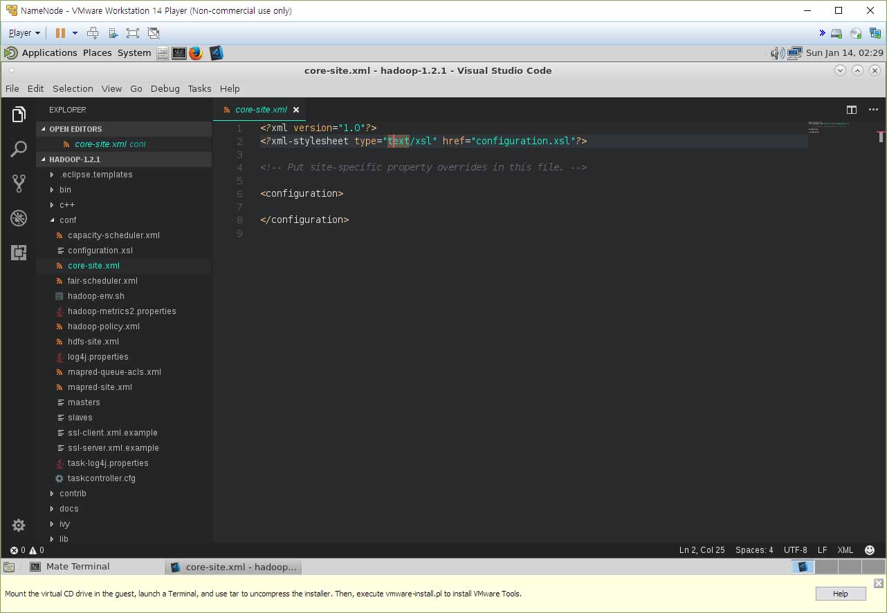
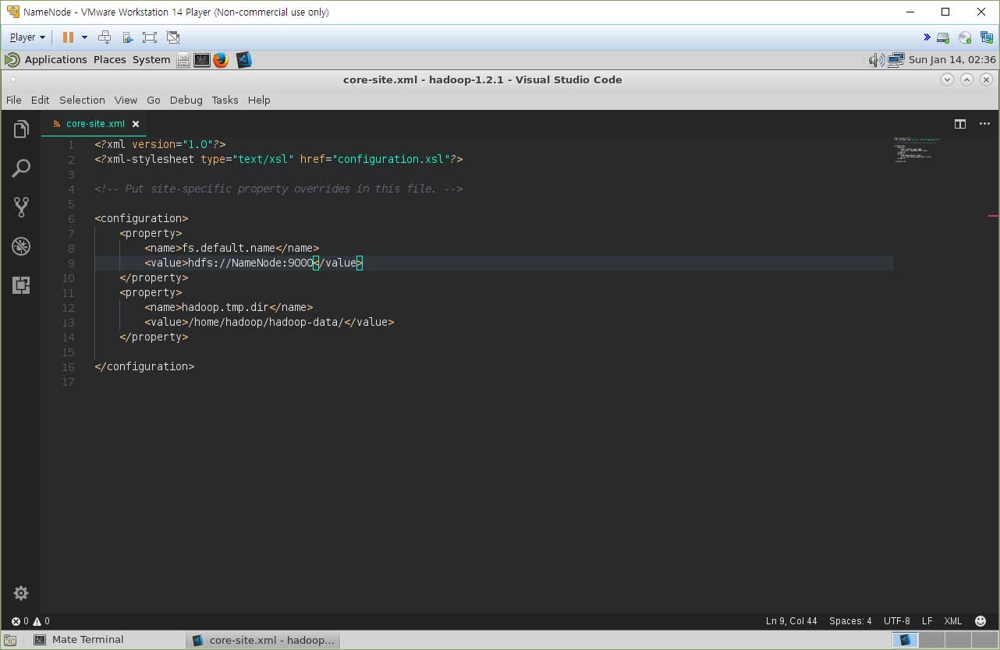
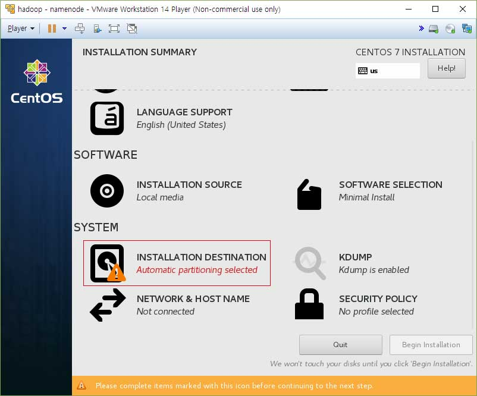
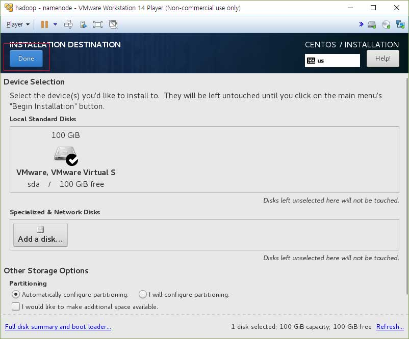
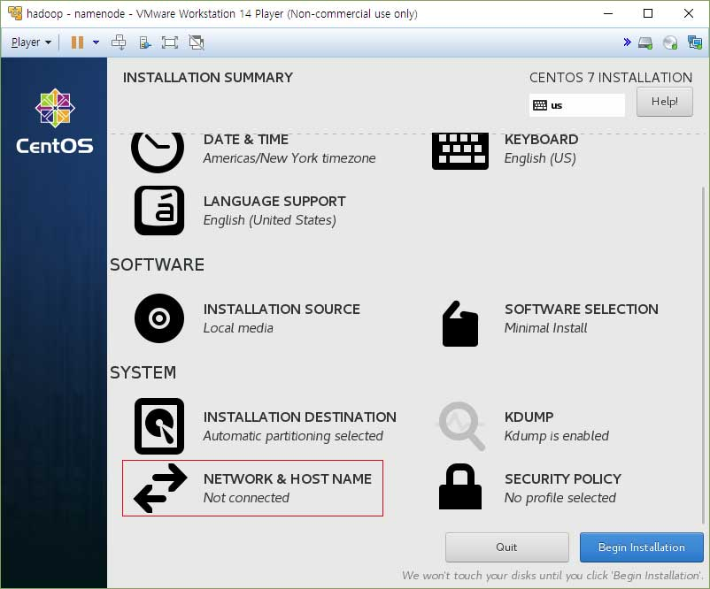

책에는 파일 위치도 안가르쳐주고 뜬금없이 hadoop-env.sh 파일에 JAVA_HOME 파라미터를 수정하라 그럽니다.
어디있는 파일인데? 이럴 땐 어떻게 찾을까요?
[
hadoop@
NameNode ~]$
cd hadoop
[
hadoop@
NameNode hadoop ~]$
find -name hadoop-env.sh
./conf/hadoop-env.sh
./share/hadoop/templates/conf/hadoop-env.sh
./src/packages/templates/conf/hadoop-env.sh
이렇게 찾을 수 있습니다. 맨 위에 있는 파일을 수정하면 됩니다.
아, 책에는 이제 vi 명령어에 대한것도 없으니 저는 이제부터 Visual Studio Code을 이용하여 작업하겠습니다.

export JAVA_HOME으로 검색하면 저 부분이 주석처리 되어있는데, 주석을 지우고 터미널에서
[
hadoop@
NameNode ~]$
echo $JAVA_HOME
/usr/lib/jvm/java-1.8.0-openjdk-1.8.0.151-5.b12.el7_4.x86_64
책에 가비지 컬렉터를 병렬처리(아마도 비동기작업 같은건가봅니다.)에 대한 언급과 최대 힙 크기 변경이 나와있어서 수정했습니다.
(실습해본 결과 에러를 토해냅니다. 책에 적혀있는대로 써도 에러를 토해냅니다. 그냥 기본값으로 넣어서 에러가 안나도록 했습니다.)
그리고 아래를 쭉 보면 주석처리 된 것들 중에 사용 할 수 있는 것들이 은근히 보입니다. 책을 보면서 하나씩 해보도록 하겠습니다.
음... 그런데 수정할게 하나밖에 남지 않았네요.

이 부분의 주석을 지우고 앞에 있는 경로를 현재 하둡 폴더의 경로로 변경해주었습니다.
책에는 또 뜬금없이 masters 파일과 slaves 파일에 대한 언급을 합니다. 어디 있는지 알려주지도 않아요.
그러니 또 찾습니다.
[
hadoop@
NameNode
hadoop ~]$
find -name masters
./conf/masters
[
hadoop@
NameNode
hadoop ~]$
find- name slaves
./conf/slaves
./src/c++/libhdfs/tests/conf/slaves
아, 다행히도 같은 폴더에 있군요. 그럼 수정합시다.
masters 파일에는 SNameNode를 추가했고,
slaves 파일에는
SNameNode
DataNode1
DataNode2
이렇게 추가하였습니다.
masters 파일에는 보조네임노드들을 쓰는 곳이고, slaves 파일에는 데이터노드들을 쓰는 곳이라고 합니다.
다음은 core-site.xml 파일을 손 댈 차례입니다. 찾아보니 이것도 같은 폴더에 있네요.

열어보니 단촐하기 그지없습니다...;;
책에 나온대로 수정하겠습니다.

수정을 마쳤습니다.
fs.default.name 은 HDFS의 기본 이름이라고 합니다.
hadoop.tmp.dir 은 하둡에서 발생하는 임시 데이터를 저장하기 위한 공간이라고 합니다.
홈 디렉토리에 임시 데이터를 저장하게 되는군요.
다음은 hdfs-site.xml 파일을 손 댈 차례입니다. 이것도 같은 폴더에 있습니다.
켜보니 core-site.xml 파일처럼 단촐하네요. 책에 있는 내용을 채워넣겠습니다.

책에 나오는대로 채워넣었습니다.
dfs.replication는 HDFS에 저장될 데이터의 복제본 개수를 의미합니다. 1은 가상 분산 모드, 3은 완전 분산 모드 입니다.
완전 분산 모드로 3개의 복제본을 만든다는 의미입니다.
dfs.http.address는 네임노드용 서버 주소입니다. 저 주소로 들어가면 모니터링이 가능합니다.
dfs.secondary.http.address는 보조네임노드용 서버 주소입니다.
그 다음은 mapred-site.xml 파일을 손 댈 차례입니다. 역시나 같은 폴더에 있고, 기본 세팅이 없이 단촐하네요.
책에 있는대로 내용을 채워넣겠습니다.

mapred.job.tracker는 잡트래커의 데몬 주소를 의미하며, 데이터노드에서 이 주소로 맵리듀스 작업을 요청한다고 합니다.
기본 환경설정이 끝났으니 하둡 폴더를 압축하여 각각의 서버에 전송하여야 합니다.
폴더쨰로 보낼 수 없어서 압축 한 뒤에 보내야 합니다.
그러니 압축하도록 하겠습니다.
[
hadoop@
NameNode ~]$
tar -zcvf hadoop.tar.gz hadoop
이렇게 하면 압축이 됩니다. 그리고 각 서버로 전송한 뒤 압축을 풀어주는 작업을 하겠습니다.
[
hadoop@
NameNode ~]$
scp hadoop.tar.gz hadoop@SNameNode:/home/hadoop/
hadoop.tar.gz 100% 61MB 60.8MB/s 00:01
[
hadoop@
NameNode ~]$
scp hadoop.tar.gz hadoop@DataNode1:/home/hadoop/
hadoop.tar.gz 100% 61MB 62.3MB/s 00:00
[
hadoop@
NameNode ~]$
scp hadoop.tar.gz hadoop@DataNode2:/home/hadoop/
hadoop.tar.gz 100% 61MB 60.9MB/s 00:01
[
hadoop@
NameNode ~]$
ssh hadoop@SNameNode "cd /home/hadoop; tar -zxvf hadoop.tar.gz; rm hadoop.tar.gz"
[
hadoop@
NameNode ~]$
ssh hadoop@DataNode1 "cd /home/hadoop; tar -zxvf hadoop.tar.gz; rm hadoop.tar.gz"
[
hadoop@
NameNode ~]$
ssh hadoop@DataNode2 "cd /home/hadoop; tar -zxvf hadoop.tar.gz; rm hadoop.tar.gz"
이렇게 하면 각각의 서버에 전송, 압축풀기, 압축파일 제거가 완료됩니다.
이제 준비가 끝났으니 드디어! 하둡을 실행할 차례네요!
터미널로 하둡폴더에 들어가서 하둡 아래 명령어로 초기화를 시킵니다.
[
hadoop@
NameNode
hadoop ~]$
./bin/hadoop namenode -format
18/01/14 03:01:00 INFO namenode.NameNode: STARTUP_MSG:
/************************************************************
STARTUP_MSG: Starting NameNode
STARTUP_MSG: host = NameNode/192.168.10.133
STARTUP_MSG: args = [-format]
STARTUP_MSG: version = 1.2.1
STARTUP_MSG: build = https://svn.apache.org/repos/asf/hadoop/common/branches/branch-1.2 -r 1503152; compiled by 'mattf' on Mon Jul 22 15:23:09 PDT 2013
STARTUP_MSG: java = 1.8.0_151
************************************************************/
18/01/14 03:01:00 INFO util.GSet: Computing capacity for map BlocksMap
18/01/14 03:01:00 INFO util.GSet: VM type = 64-bit
18/01/14 03:01:00 INFO util.GSet: 2.0% max memory = 1908932608
18/01/14 03:01:00 INFO util.GSet: capacity = 2^22 = 4194304 entries 18/01/14 03:01:00 INFO util.GSet: recommended=4194304, actual=4194304
18/01/14 03:01:00 INFO namenode.FSNamesystem: fsOwner=hadoop 18/01/14 03:01:00 INFO namenode.FSNamesystem: supergroup=supergroup
18/01/14 03:01:00 INFO namenode.FSNamesystem: isPermissionEnabled=true 18/01/14 03:01:00 INFO namenode.FSNamesystem: dfs.block.invalidate.limit=100
18/01/14 03:01:00 INFO namenode.FSNamesystem: isAccessTokenEnabled=false accessKeyUpdateInterval=0 min(s), accessTokenLifetime=0 min(s)
18/01/14 03:01:00 INFO namenode.FSEditLog: dfs.namenode.edits.toleration.length = 0
18/01/14 03:01:00 INFO namenode.NameNode: Caching file names occuring more than 10 times
18/01/14 03:01:00 INFO common.Storage: Image file /home/hadoop/hadoop-data/dfs/name/current/fsimage of size 112 bytes saved in 0 seconds.
18/01/14 03:01:00 INFO namenode.FSEditLog: closing edit log: position=4, editlog=/home/hadoop/hadoop-data/dfs/name/current/edits
18/01/14 03:01:00 INFO namenode.FSEditLog: close success: truncate to 4, editlog=/home/hadoop/hadoop-data/dfs/name/current/edits
18/01/14 03:01:00 INFO common.Storage: Storage directory /home/hadoop/hadoop-data/dfs/name has been successfully formatted.
18/01/14 03:01:00 INFO namenode.NameNode: SHUTDOWN_MSG:
/************************************************************
SHUTDOWN_MSG: Shutting down NameNode at NameNode/192.168.10.133
************************************************************/
초기화를 시켰으니 bin 폴더의 start-all.sh 파일을 실행하면 하둡이 실행됩니다.
[
hadoop@
NameNode
hadoop ~]$
./bin/start-all.sh
starting namenode, logging to /home/hadoop/hadoop/libexec/../logs/hadoop-hadoop-namenode-NameNode.out
SNameNode: starting
datanode, logging to /home/hadoop/hadoop/libexec/../logs/hadoop-hadoop-datanode-SNameNode.out
DataNode2: starting datanode,
logging to /home/hadoop/hadoop/libexec/../logs/hadoop-hadoop-datanode-DataNode2.out
DataNode1: starting datanode, logging
to /home/hadoop/hadoop/libexec/../logs/hadoop-hadoop-datanode-DataNode1.out
SNameNode: starting secondarynamenode,
logging to /home/hadoop/hadoop/libexec/../logs/hadoop-hadoop-secondarynamenode-SNameNode.out
starting jobtracker, logging
to /home/hadoop/hadoop/libexec/../logs/hadoop-hadoop-jobtracker-NameNode.out
SNameNode: starting tasktracker, logging
to /home/hadoop/hadoop/libexec/../logs/hadoop-hadoop-tasktracker-SNameNode.out
DataNode2: starting tasktracker, logging
to /home/hadoop/hadoop/libexec/../logs/hadoop-hadoop-tasktracker-DataNode2.out
DataNode1: starting tasktracker, logging
to /home/hadoop/hadoop/libexec/../logs/hadoop-hadoop-tasktracker-DataNode1.out
뭐지? 실행이 된건가? 저러고 그냥 끝납니다. 그것도 확인하는 방법이 책에 나와있습니다.
[
hadoop@
NameNode
hadoop ~]$
jps
2680 Jps
2222 NameNode
2399 JobTracker
네임노드에서 jps를 실행하면 네임노드, 잡트래커, jps가 나오고 데이터노드 서버에서 jps를 다시 실행시켜 보랍니다.
[
hadoop@
SNameNode
hadoop ~]$
jps
1520 TaskTracker
1425 SecondaryNameNode
1347 DataNode
1596 Jps
.... 뭐 잘 나오는 것 같습니다.

잘 된 것 같군요. 그럼 책에 나온 예제를 한번 실행시켜 보겠습니다.
[
hadoop@
NameNode
hadoop ~]$
./bin/hadoop fs -put conf/hadoop-env.sh conf/hadoop-env.sh
[
hadoop@
NameNode
hadoop ~]$
./bin/hadoop jar hadoop-examples-*.jar wordcount conf/hadoop-env.sh wordcount_output
18/01/14 12:09:56 INFO input.FileInputFormat: Total input paths to process : 1
18/01/14 12:09:56 INFO util.NativeCodeLoader:
Loaded the native-hadoop library
18/01/14 12:09:56 WARN snappy.LoadSnappy: Snappy native library not loaded
18/01/14 12:09:56
INFO mapred.JobClient: Running job: job_201801141202_0001
18/01/14 12:09:57 INFO mapred.JobClient: map 0% reduce 0%
18/01/14
12:10:00 INFO mapred.JobClient: map 100% reduce 0%
18/01/14 12:10:09 INFO mapred.JobClient: map 100% reduce 100%
18/01/14
12:10:09 INFO mapred.JobClient: Job complete: job_201801141202_0001
18/01/14 12:10:09 INFO mapred.JobClient: Counters: 29
18/01/14 12:10:09 INFO mapred.JobClient: Map-Reduce Framework
18/01/14 12:10:09 INFO mapred.JobClient: Spilled Records=352
18/01/14 12:10:09 INFO mapred.JobClient: Map output materialized bytes=3111
18/01/14 12:10:09 INFO mapred.JobClient: Reduce
input records=176
18/01/14 12:10:09 INFO mapred.JobClient: Virtual memory (bytes) snapshot=3968749568
18/01/14 12:10:09 INFO
mapred.JobClient: Map input records=60
18/01/14 12:10:09 INFO mapred.JobClient: SPLIT_RAW_BYTES=116
18/01/14 12:10:09 INFO
mapred.JobClient: Map output bytes=3836
18/01/14 12:10:09 INFO mapred.JobClient: Reduce shuffle bytes=3111
18/01/14 12:10:09
INFO mapred.JobClient: Physical memory (bytes) snapshot=268640256
18/01/14 12:10:09 INFO mapred.JobClient: Reduce input groups=176
18/01/14 12:10:09 INFO mapred.JobClient: Combine output records=176
18/01/14 12:10:09 INFO mapred.JobClient: Reduce output
records=176
18/01/14 12:10:09 INFO mapred.JobClient: Map output records=305
18/01/14 12:10:09 INFO mapred.JobClient: Combine
input records=305
18/01/14 12:10:09 INFO mapred.JobClient: CPU time spent (ms)=840
18/01/14 12:10:09 INFO mapred.JobClient:
Total committed heap usage (bytes)=194510848
18/01/14 12:10:09 INFO mapred.JobClient: File Input Format Counters
18/01/14
12:10:09 INFO mapred.JobClient: Bytes Read=2656
18/01/14 12:10:09 INFO mapred.JobClient: FileSystemCounters
18/01/14 12:10:09
INFO mapred.JobClient: HDFS_BYTES_READ=2772
18/01/14 12:10:09 INFO mapred.JobClient: FILE_BYTES_WRITTEN=121159
18/01/14 12:10:09
INFO mapred.JobClient: FILE_BYTES_READ=3111
18/01/14 12:10:09 INFO mapred.JobClient: HDFS_BYTES_WRITTEN=2403
18/01/14 12:10:09
INFO mapred.JobClient: Job Counters
18/01/14 12:10:09 INFO mapred.JobClient: Launched map tasks=1
18/01/14 12:10:09 INFO
mapred.JobClient: Launched reduce tasks=1
18/01/14 12:10:09 INFO mapred.JobClient: SLOTS_MILLIS_REDUCES=7957
18/01/14 12:10:09
INFO mapred.JobClient: Total time spent by all reduces waiting after reserving slots (ms)=0
18/01/14 12:10:09 INFO mapred.JobClient:
SLOTS_MILLIS_MAPS=3103
18/01/14 12:10:09 INFO mapred.JobClient: Total time spent by all maps waiting after reserving slots
(ms)=0
18/01/14 12:10:09 INFO mapred.JobClient: Data-local map tasks=1
18/01/14 12:10:09 INFO mapred.JobClient: File Output
Format Counters
18/01/14 12:10:09 INFO mapred.JobClient: Bytes Written=2403
[
hadoop@
NameNode
hadoop ~]$
./bin/hadoop fs -cat wordcount_output/part-r-00000
# 36
$HADOOP_BALANCER_OPTS" 1
$HADOOP_DATANODE_OPTS" 1
$HADOOP_HOME/conf/slaves 1
$HADOOP_HOME/logs 1
$HADOOP_JOBTRACKER_OPTS"
1
$HADOOP_NAMENODE_OPTS" 1
$HADOOP_SECONDARYNAMENODE_OPTS" 1 $USER 1
${HADOOP_NAMENODE_OPTS} 1
${HADOOP_NAMENODE_OPTS}" 1
${HADOOP_SECONDARYNAMENODE_OPTS} 1
'man 1
(fs, 1
-o 1
tmp 1
1000. 1
A 1
ll 1
CLASSPATH 1
Command 1
ConnectTimeout=1 1
Default
1
Empty 2
Extra 3
File 1
HADOOP_BALANCER_OPTS="-Dcom.sun.management.jmxremote 1
HADOOP_CLASSPATH= 1
HADOOP_CLIENT_OPTS 1
HADOOP_DATANODE_OPTS="-Dcom.sun.management.jmxremote 1 .
.
.
.
.
.
다 잘 되는 모양입니다. 다음 실습은 다음 글에서 마저 하겠습니다.
책에는 아직 설명이 없지만, 하둡 서버를 끌 때는
[
hadoop@
NameNode
hadoop ~]$
./bin/stop-all.sh
DataNode2: stopping tasktracker
SNameNode: stopping tasktracker
DataNode1: stopping tasktracker
stopping namenode
DataNode2:
stopping datanode
SNameNode: stopping datanode
DataNode1: stopping datanode
SNameNode: stopping secondarynamenode
하고 입력하면 됩니다.
다음 글 보기